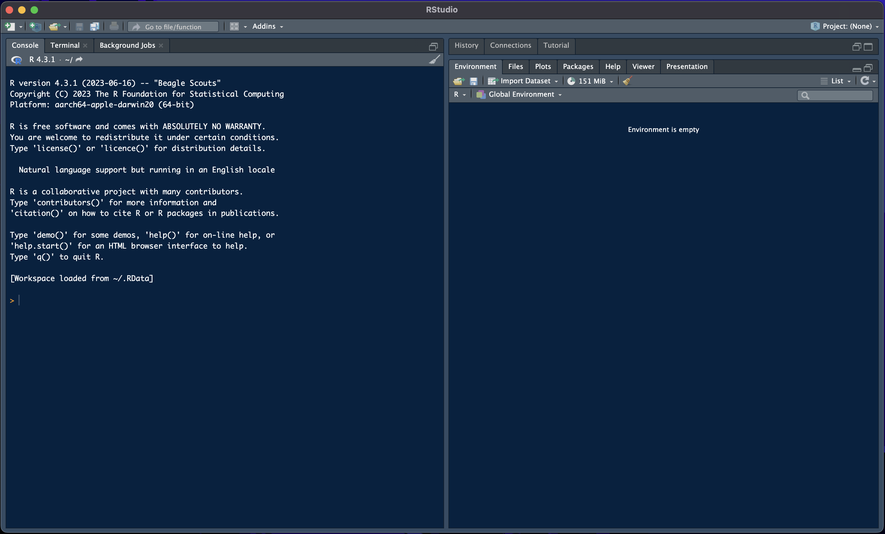

1 Introduction to R
1.1 Why learn R?
In these notes, we will focus on the R programming language. R is probably the most used programming language in econometric research, and probably the second most used language in data science, data analytics, and related jobs. Thus, learning R does not just allow you to gain a better understanding of what you will learn during this course, but also gives a skill that is directly valued in the industry.
Some of you might wonder why we do not teach Python since it seems to be the most famous programming language. This is simply due to the fact that most research in econometrics and most econometric theory is still first implemented in R. Additionally, R will be your trustworthy companion throughout the rest of your studies. Lastly, we do not teach you R just so that you are able to code in R. Instead, we hope you take away a special kind of thinking that applies to coding in general. Learning how to code is not just about learning the syntax of a programming language; it is about learning how to think in a very specific way. Once you are able to think like a coder, you will quickly be able to learn any programming language, including Python. This kind of thinking will be further strengthened in EBC2016.
Almost all programming languages, including R, are what is called Turing complete. This means, given enough time and memory, they can solve any computational problem. This also means that there are a lot of things one could do with a programming language, which necessarily comes with a lot of things that one could learn. We will, therefore, not be able to teach you all about coding and R, but instead will focus on what is necessary in probability theory and econometrics in general. We will, therefore, mostly focus on how to do mathematics, how to simulate, and how to communicate results. Later courses in the Econometrics and Operations Research bachelor will teach you some more programming related to data science and operations research, and what you will learn here will hopefully form a good basis for these future courses.
1.2 Installing R and R Studio
Most people use R together with the great development environment R Studio. We therefore recommend that you install both. R can be downloaded from the r-project and we recommend that you follow the instructions for installation given there. R Studio can be downloaded from Posit. Note that the name Posit is relatively new and until recently the company was still called R Studio - so like the development environment itself.
After opening R Studio, you should see a window like in Figure 1.1 except that yours is likely still in light mode. On the left-hand-side is the console, while the two panes on the right-hand-side show you a history of the last commands, and the current environment. The current environment shows you all the variables that are currently available in your environment. This should be empty when you first start R Studio. We will cover in Chapter 3 what variables are and how you can use them. The console, on the other hand, is where we can write commands that are immediately executed after pressing enter. We do not recommend that you work in the console unless you just want to test something. Instead, we recommend you always work in an R-script. You can open a new R-script by pressing File >> New File >> R Script.
